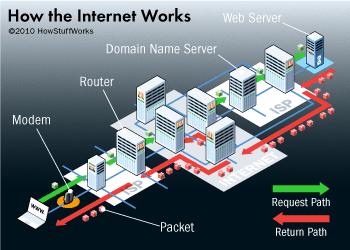

What is the internet?
And why are you kids on it all damn day?
April 17, 2015
So what is the internet? Can it really just be a series of tubes? Well, in many ways yes, it really is that simple. Think of the internet as a network, or even better, a network of computers, just like yours. Data is stored in computers and servers, and really the interet is just a methodology for accessing that data. When you download a file or visit a website you're directing your computer to go to a place, a tangible place, find that data and bring it back to you. It's that simple. Take a look at this graphic.

Let's start with the part of the internet that probably makes the most sense to you and that's your own personal computer. The computer houses your data, the information you type and the content you create. And to help the world know that it's you that is housing this, your computer has its own IP number, which is basically just a global identification number, like a digital address. But the question is, how do you connect this address to others around you to share the data. Well, imaging you are starting in France and trying to drive to Germany to buy a television. The first thing you are going to need is directions. Same goes for your computer. When you type in a website that is basically your computer sending out a signal asking for help in getting to a destination. The request travels out of your computer, to your router then to your internet provider and eventually lands you on the server that's hosting the website you want. All because you entered the exact location you were searching for. This is why ESPN.COM gets us sports and ESN.COM does not. The internet is an exact thing.
But back to our television purchase. So ok, we've driven to Germany but the problem is we don't speak German. Wouldn't it suck to make it all the way to our destination only to find out they can't understand us? Well, same applies to the internet. There are so many different possible languages out there on the internet that how can we be sure that when we put in a request for something from our personal computer the servers out there know how to interpret what we want? Well, turns out the internet has a series of protocols, basically groundrules, that govern how networks should talk to each other. These protocols tell their servers what it is you're looking for and explain in great detail how to send back the information we are requestion. The same goes for if we are trying to send information to others. When we send out an email how do we know that our friend's computer will know how to interpret our code? Thankfully computers already have all this figured out and know how to speak with each other, meaning once the connections are made they know how to interpret the data.
Which brings us to the data itself. So we get how computers connect, through the ultra-specific location identifiers, and how the computers are already trained in speaking the same language to understand what we want, but how is the data actually sent? Does ESPN send me an entire article at once? It turns out, as part of knowing the same language, the computers also came up with a system for how to send data, or more specific, how to break up the final product into little bits that your computer will know how to rebuild once it all reaches you. Servers send you data in what are called packets; basically bite-sized bits of information that your computer knows how to sort and then combine once they hit your screen.These protocols are insanely complicated but as long as you conceptually understand that you get your data piece by piece and then its rebuilt (before you even knew it was split) by your computer and then shown to you, you're gonna be just fine!
Anyways, that's a basic introduction to the internet. In many ways it is insanely complicated, and in other ways its painfully simple. Overall it really is just a series of tubes, though the backbone computer languages that train your system to communicate with the other systems out there are really what makes this thing tick. Have fun!